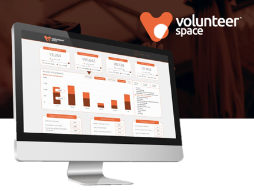
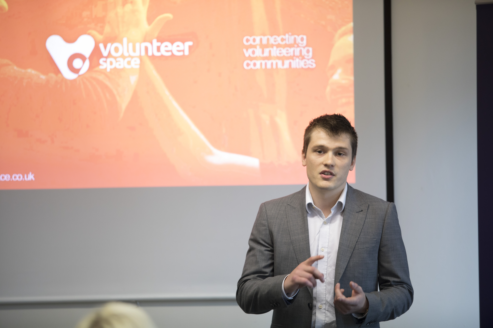
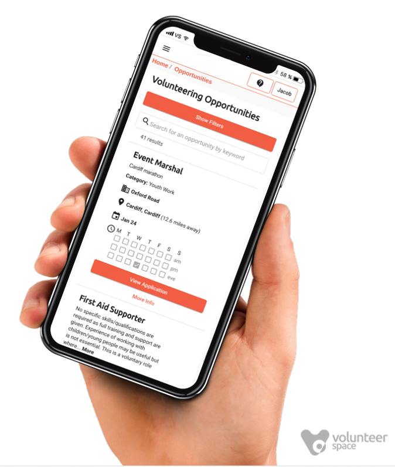
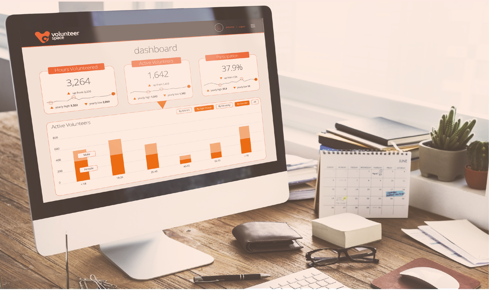

Co-founded Volunteer Space and ran it as MD: B2B SaaS for volunteer coordination between charities and corporate social impact teams. Raised a £250k seed round, built a team of 6 and generated 91 qualified leads worth £1.5m, then closed it in Dec 2019 without product-market fit.

A web platform for charities and corporate social impact teams to run their volunteers in one place: recruitment, onboarding, sessions and reporting, with volunteers matched on skills and interests.


Volunteer Space came out of the Alacrity Foundation, a founder-training venture builder, where I spent 16 months as business lead testing startup ideas.
91 qualified leads from outreach, events and follow-up, worth £1.5m across enterprise and mid-market.

We pivoted on user feedback, then closed in Dec 2019 without reaching product-market fit. We never became a must-have for users, and we tried to serve too many user types at once.
This was humbling — and provided the hardest-earned education I've received. I left with a deeper understanding of what it takes to build something that succeeds.